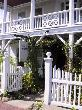
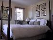
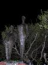

Camden church
Camden church
Pilgrim monument

Stars and stripes

Jane amongst the stars and stripes
An art gallery
Our room
Statue
We went downstairs for our "help yourself breakfast" there were lots of different items to choose from.
We decided to go for a walk around the town and found some really interesting looking houseware/garden shops. As we wandered into one Kayak outfitters we were asked if we wanted to go for a paddle, and that they'd offer us a 2 hour rental rather than a 4 hour rental if we'd prefer (they were having a quiet day and figured that some rental was better than none). We said we'd think about it and continued with our shopping. Our plan had been to hire bikes and cycle along the coastal trail but as we'd tried to find kayaks and failed a few times on this holiday, we decided that this is what we should do. So, after a quick change of clothes we headed off to Off The Coast Kayak. They gave us some instruction, a map and a watch (so we knew when our 2 hours was up). We paddled out and over to long point, near the lighthouse where we stopped on the sand for a few moments. Then headed back. We arrived back a few minutes early and got changed into our spare clothes (which we were glad to have as we both had really soggy bums).
We headed back to the Carriage House and had showers to get rid of that sea smell. We then opened up the half bottle of champagne that we'd bought earlier and spent a bit of time just relaxing.
We headed out to dinner via the front desk and got a couple of recommendations of places to try. We looked at the menu and headed off to try The Mews which turned out to be a pretty good place with nice food, nice wine and a lovely view out into the harbour.
(8 images.)|
Camden church |
Camden church |
Pilgrim monument |
Stars and stripes |
|
Jane amongst the stars and stripes | 
An art gallery | 
Our room | 
Statue |